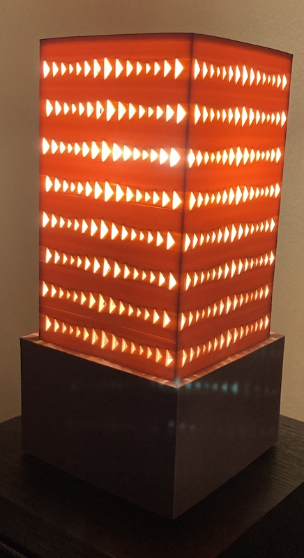

Part 1: Finishing the Lamp
This week didn't go exactly as planned. I was feeling confident that I was in a good place with my lamp at the end of last
week. However, when I started printing the 2 final pieces I realized that my project wasn't as feasible as I originally thought. As a reminder,
at the end of last week I already had my base printed and the bulb stand.
Last week's progress
I only had the two shades left to print. I started with a small print of a few different shade patterns. I used the TweenCurves, Distribue and Align commands to create my trials. I really liked the combination of the triangle outer shade, and the circle inner shade the best.
When I started working on the outer shade I realized that because of the bulb stand height, my shade was going to be too tall for the printer dimensions, so I reprinted the bulb stand to lower the position of the bulb. In addition to lowering the height, I also added a brace to the bottom of the bulb stand that would stabilize the bulb stand in the middle of the base, because the original bulb stand was just floating in the middle of the base. I measured the inside of the base dimensions and modeled the base ring to fit there. I also had to make sure I added the hole in the ring for the power cord to feed through.
I then started printing the outer shade and realized pretty quickly how delicate these shades would be. I was trying to make the shades as thin as possible to try to capture some semi-opaque light as well, but about 1/2 through a 14 hr print, it wasn't looking good, so I stopped the print. When I held it, I realized how delicate it was, and the points between the shapes were really weak and they broke. Knowing how unstable this was, and that I would have to print a second shade, I decided to edit my design.
My new design is a simpler version. Due to the height constraints, I raised the height of the base so both the base and the shade would be more stable and easier to print. I eliminated a second shade, and I made the remaining shade much thicker at 4mm as compared to 1.6mm. With this new plan in mind I made the sketches in Rhino and began printing. Printing the base was long, but went pretty smoothly. The shade was a different story. Once I attached the base to the bulb stand, I measured the fixture to see how tall the shade had to be. Sadly, I discovered after a completed 14 hour print that I had measured in inches and rendered in cm. So now I have a really pretty pencil holder. But, the print was not in vain. I realized the pattern was too close together and it was hard to see the size gradient of the pattern, so I decided to change the pattern just in the z axis. This allowed the pattern to have more negative space and to also show a bigger gradient size difference through the pattern. After an 18 hour print, I finally had the correctly sized shade and it fit on the base perfectly.
Finished Lamp!

My Final Files
bulb stand STLbulb stand Rhino
base STL
base Rhino
shade STL
shade Rhino
Main takeaways from the lamp:
measuring correctly is crucial
increasing the speed to 75 made the machine much more quiet
thin walls are fragile
the concentric layout is beautiful
long prints make you practice patience
closing the window prevented my prints from lifting, but then I had to find a new office space
Part 2: Building Diamonds
A few years ago, a co-worker brought in diamond shaped handmade soaps and I thought these were really awesome. The shape and color of her soaps was my inspiration for this week. I first created my diamond shape in Rhino using two hexagon polygons and a point as the beginning of the shape. I then concentrically aligned them, combined them with the loft command with the setting of split at tangents, then used the cap planar holes command, and this was the resulting beauty!

Next, I used the draft angle analysis. I was not surprised when I saw the divide of red and blue at the widest points of the polygon, but I was thinking It might be easier to print the mold symetrically down the the vertical center to create a mold where I could hide the seams in the seams of the diamond, but then I realized I would have a seam on the top of the diamond, so I went back to the original draft angle analysis. I also thought this would be the better way to explode the shape because I could fill it from the top and I could leave a hole open so I could see when the mold was fully filled, and wouldn’t have excess in the hole.

I created a surface that divided the shape and then I exploded it. I grouped the surfaces to create the two sides to the mold. Next I did a ribbon offset. Since my shape is divided on the horizontal axis, there was no need for me to make another offset with a 0 curve. I did use two offsets to create a planar surface which I connected to the ribbon offset. Then I extruded the sides of the planar surface to create the base of the mold. I learned about the shift command keyboard function to select only the top layer of the box to delete it. Finally, I used BooleanDiference to create the pour hole in the top of the top mold.

With both sides of my mold created, I added my keys. I did this by aligning the two pieces on top of each other and adding spheres for the keys. Next I copied all of the pieces, and used BooleanUnion on one side and BooleanDifference on the other. Finally, I had to take both pieces of the mold and add the surrounding box to use for the silicone. I drew the boxes and used the BooleanDifference command to create the silicone mold. I then printed it. That's my mold progress for the week.